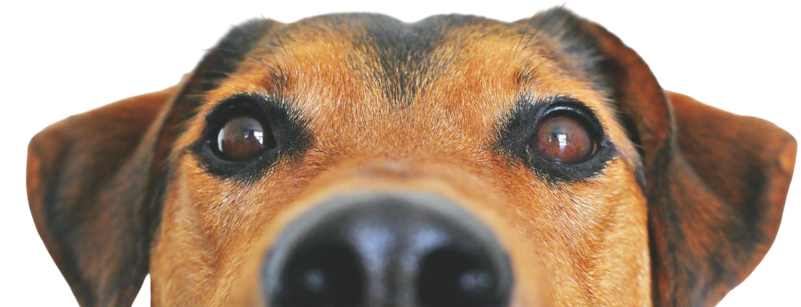
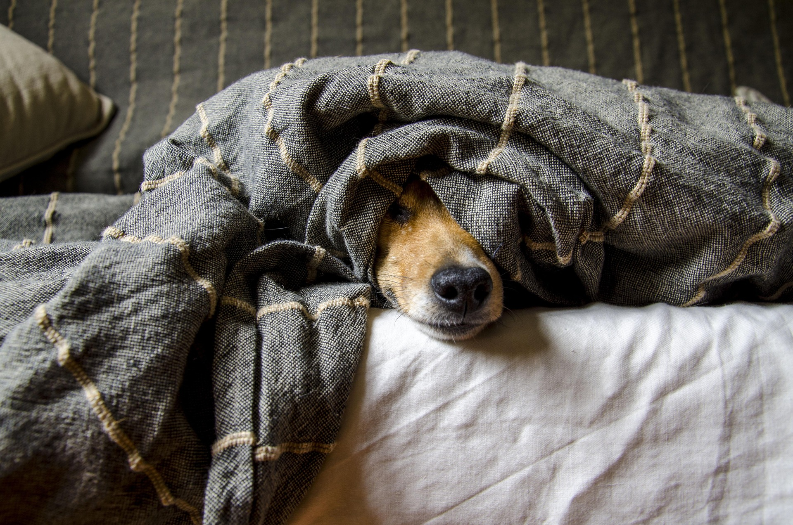
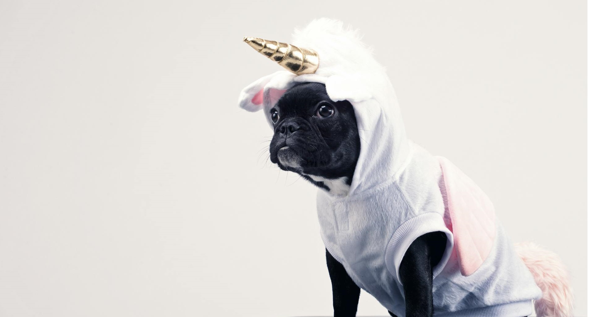

Sobre nós
O Pet Shop dos AuMigos nasceu de um sonho e de uma amizade especial entre humanos e animais. Tudo começou há 25 anos, movidos por um amor incondicional pelos pets e pelo desejo de oferecer a eles o cuidado, o carinho e a atenção que realmente merecem.
Na época, percebemos que nossos próprios animais de estimação precisavam de mais do que produtos e serviços comuns — eles precisavam ser tratados com respeito, responsabilidade e muito afeto. Inspirados por esse sentimento, abrimos as portas de uma pequena loja de bairro, com poucos produtos, mas com uma vontade enorme de fazer a diferença na vida dos pets e de seus tutores.

Com um atendimento próximo e acolhedor, fomos conquistando a confiança da comunidade e, com o tempo, o que era um espaço modesto se transformou em referência na região. Crescemos, nos modernizamos e ampliamos nossos serviços, mas mantivemos intacta a essência de quando tudo começou: tratar cada pet como parte da nossa família.
Hoje, o Pet Shop dos AuMigos é um ambiente completo, onde você encontra serviços de banho e tosa com profissionais experientes, atendimento veterinário de confiança, produtos de higiene, além de uma seleção especial de rações, brinquedos, roupinhas e acessórios para todos os estilos e necessidades.

Nossa missão continua sendo a mesma desde o primeiro dia: proporcionar bem-estar, saúde e alegria para os animais, oferecendo um atendimento personalizado, feito com amor, dedicação e responsabilidade. Estamos sempre atentos às novidades do mundo pet para garantir que você e seu melhor amigo tenham acesso ao que há de melhor em produtos e serviços.
Nosso maior orgulho é ver o brilho nos olhos dos pets (e de seus tutores!) que passam por aqui. Mais do que um pet shop, somos um ponto de encontro para quem ama, cuida e valoriza os animais com o coração.
Venha nos visitar e fazer parte da nossa história. No Pet Shop dos AuMigos, seu pet está sempre em boas mãos!